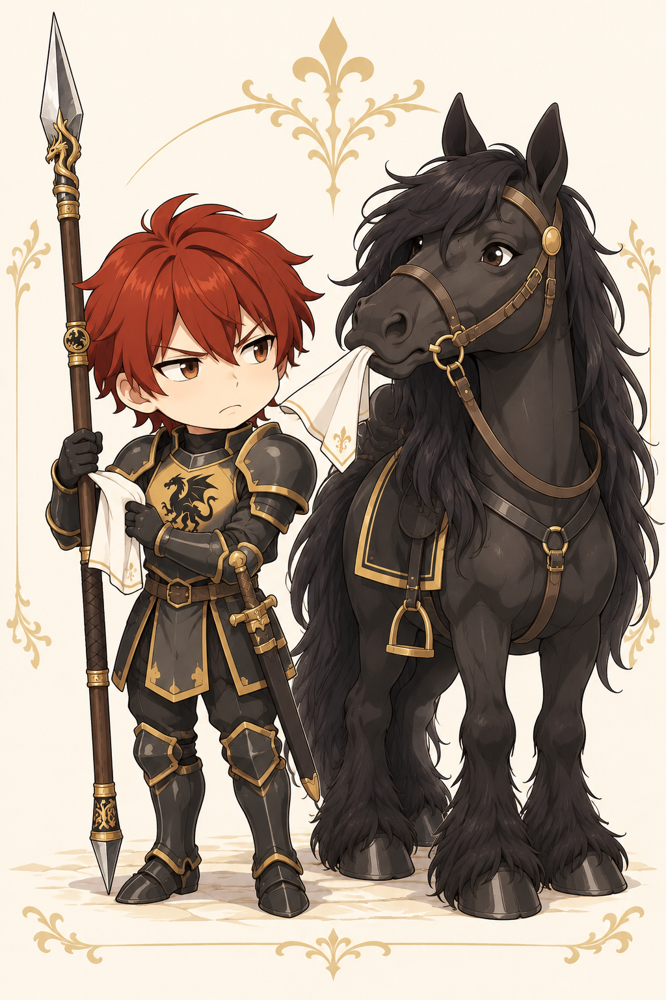

Ein normaler Schlagabtausch?
Schnitt über die Flanke und Wacht der langen Schuppe verbinden einen gezielten Angriff mit einem Reaktionsangriff und Deckung.
Lanzenführung, Deckung und vorbereitete Konter
Gais verbindet den Druck der Lanze mit den Haltungen des Jungdrachens. Er kann den Gegner binden, dessen Waffenführung stören oder eine verfehlte Attacke beantworten. Entscheidend ist, welche Reaktion er vorbereitet und welche Ressourcen er dafür freihält.

Bogenstand: 15. Oktober 2026 · Ohne temporäre Szeneneffekte. Aktuelle TP, Ressourcen und Zustände stehen im Charakterbogen.
Als Uchelwyr verfügt Gais über Angriff, Verteidigung, Bindung, Entwaffnung und vorbereitete Konter. Die Lanze eröffnet seine stärksten Speertechniken. Mit Saithor als geführtem Reittier kommen die erlernten berittenen Optionen hinzu.
Schnitt über die Flanke und Wacht der langen Schuppe verbinden einen gezielten Angriff mit einem Reaktionsangriff und Deckung.
Gebundene Klaue kann sie nach Treffer und misslungenem KRF-Rettungswurf nehmen. Plane trotzdem für den Fall, dass die Rettung gelingt.
Verwurzelte Schuppe federt einmal Schaden ab; Geschuppte Deckung hilft über RK. Wähle eine Jungdrachen-Schutzhaltung, statt mehrere übereinanderzulegen.
Aktion, Bonusaktion und Reaktion erneuern sich beim nächsten regulären eigenen Beitrag. Besondere Aktionen bilden einen begrenzten Vorrat mit eigener Erholung.
Eine Bonusaktion · einmal pro langer Rast · höchstens bis zum TP-Maximum · ohne KON-Bonus.
Wähle einen Eintrag für seine Vorschau. Persönliche Techniken, Kampfformen, Waffenangriffe und passive Fähigkeiten sind getrennt aufgeführt. Die Kampfpläne dieses Guides behandeln den Nahkampf; die Gesamtliste enthält auch vorhandene Fernkampfoptionen.
37 Einträge
Keine passenden Einträge. Ändere die Suche oder die Filter.
Charakterarsenal · ab Stufe 5
Gais lässt die gegnerische Waffe an seiner eigenen abgleiten, tritt in die geöffnete Linie und legt sein ganzes Gewicht in einen einzigen entschlossenen Stoß. (Ein Trefferwurf mit +2; 3× Waffenwürfel + voller Schadensbonus. Keine zusätzliche Entwaffnung oder Betäubung. Aktion + Bonusaktion + Reaktion + 1 Besondere Aktion. Zu Fuß und beritten; kein zusätzlicher Reittierschaden.)
Auswahl und Ausrüstung gelten für diese Vorschau. Kosten und Werte beziehen sich auf den dokumentierten Bogenstand; Waffenwechsel und Aufsteigen benötigen im Kampf ihre regulären Aktionen.
Die folgenden Abläufe passen bei verfügbaren Ressourcen in einen eigenen Beitrag. Treffer, Rettungswürfe und Reaktionen entscheiden über ihre tatsächliche Wirkung.
8 Kombinationen
Gais bindet alle regulären Ressourcen und eine Besondere Aktion in einen einzelnen Angriff. (+2 auf den Trefferwurf; 3× Waffenwürfel + voller Schadensbonus.)
Hoher Schaden pro Treffer hilft gegen Rüstung. Ein Fehlschlag verbraucht trotzdem alle Kosten; keine zusätzliche Kontrolle oder automatische Pferdeattacke.
Der tiefe Angriff bündelt Schaden und öffnet die Deckung, die freie Reaktion erlaubt einen zweiten Lanzenangriff.
Berittene Voraussetzung beachten. Der RK-Bonus der Wacht entsteht nur nach ihrem Treffer.
Der Hauptangriff hat einen kleinen Trefferbonus. Nur bei Treffer bringt der Reaktionsangriff zusätzlich +1 RK. Die Bonusaktion bleibt für einen leichten Angriff, eine passende Vorbereitung oder die einmalige Heilung frei.
Wacht der langen Schuppe ist ein bezahlter Reaktionsangriff. Die Lauernde Klaue ist eine andere, erst auszulösende Kontervorbereitung.
Eine Besondere Aktion verstärkt den Hauptangriff, die Reaktion liefert einen weiteren regulären Waffenangriff und Deckung. Gut, wenn der Gegner jetzt besiegt werden kann.
Der stärkere Hieb muss treffen. Bei sehr hoher gegnerischer RK kann Trefferverbesserung mehr wert sein als ein zusätzlicher Würfel.
Gebundene Klaue verursacht normalen Waffenschaden und kann die gegnerische Reaktion im nächsten eigenen Beitrag sperren. Die eigene Reaktion bleibt für Wacht der langen Schuppe frei.
Der Gegner behält Aktion und Bonusaktion. Die Sperre benötigt erst einen Treffer und dann eine misslungene Rettung.
Zuerst Täuschende Klaue. Wenn sie trifft, erhält der folgende eigene Waffenangriff einmal Vorteil – hier die Wacht. Verfehlt die Finte, bleibt der zweite Angriff normal.
Die Reihenfolge ist wichtig. Einen einmaligen Vorteil nicht vorher mit einem schwächeren Bonusangriff verbrauchen.
Nach dem Aktionsangriff bereitet Gais einen Gegenangriff vor. Erst ein verfehlter gegnerischer Waffen-/Technikangriff löst ihn einmalig aus, dann mit Vorteil und normalem Waffenschaden.
Trifft der Gegner oder greift er nicht passend an, bleibt der Konter aus. Keine Konterketten; eine zusammengehörige Angriffsfolge wird zunächst vollständig beendet.
Mit tatsächlich ausgewähltem Saithor steht Sattelantritt bereit. Der Reaktionsangriff bleibt eine zusätzliche bezahlte Option. Nur einsetzen, wenn die Szene Reiten und die nötige Annäherung zulässt.
Das Aufsteigen kostet nach der Startaufstellung eine Bonusaktion. Sattelantritt kostet eine Aktion und bleibt dann möglich; für einen zusätzlichen Bonusangriff ist die Bonusaktion bereits verbraucht.


W12 Grundwürfel, aber keine zusätzliche Waffenverzauberung. Sie öffnet passende Speer-/Lanzentechniken. Ihre Reichweite ist im aktuellen Eintrag nicht mit einer konkreten Meterzahl hinterlegt; daraus keine kostenlose Distanzüberlegenheit erfinden.
W8 Grundwürfel und keine hinterlegte zweihändige W10-Variante. Eine verlässliche Ersatzwaffe nach Entwaffnung oder bei einer passenden Szene. Reaktionsangriffe wie Steigbügelkonter bleiben möglich; die speergebundene Wacht nicht.
RK 15 und Grundschutz gegen Hieb, Stich und Wucht. Verwechsel schwere Rüstung nicht mit vollständiger Schadensvermeidung. Der fehlende Schild ist kein unsichtbarer Zusatzbonus.
Ohne Begleiter trägt die Figur Angriff und Abwehr allein. Mit einem aktiven Tier kommen dessen eigene Handlungen, Ressourcen und Verwundbarkeit hinzu.
Zu Fuß nutzt Gais sein großes Grundarsenal. Mit Saithor als ausgewähltem Reittier kommen Sattelantritt und Niedrige Lanzenbahn hinzu. Die übrigen Namen mit Sattel oder Steigbügel sind nicht automatisch berittene Pflichttechniken; ausschlaggebend ist die angezeigte Voraussetzung.
Saithor ist ein Edelsale, die bereits benannte Kreuzung aus Ceffyl und Sale. Ritterliche Reiterbindung trifft nordische Ausdauer. Er wird als eigenes Tier mit eigenem Bogen, eigenen TP und Hufschlag geführt; kein pauschaler Reiterbonus auf Angriff, RK oder Schaden.
Vor Kampfbeginn beritten starten oder später eine Bonusaktion für das Aufsteigen bezahlen. Reichweite, Untergrund und Platz müssen zur Szene passen. Im engen Raum oder bei gefährdetem Ross kann Absitzen die klügere Entscheidung sein.
Soll das Pferd selbst kämpfen, muss es in der Szene als eigener Akteur geführt werden. Sein Hufschlag verbraucht seine Aktion. Er wird nicht zusätzlich in Gais’ Technik eingerechnet. Überleben und Rückzug des Rosses gehören zur Planung eines langen Gefechts.
Kritische Treffer: Der normale Schadenswürfelpool zählt maximal; ein gleicher weiterer Pool wird gewürfelt. Feste Boni zählen einmal. Aus 1W8+3 werden 8+1W8+3. Jede Angriffsinstanz prüft ihren Krit getrennt; Rüstung und Resistenzen greifen anschließend. Heilung, Eigenschaden und automatische Wirkungen erhalten keinen Kritaufschlag.
Entwaffnete Waffen werden zu Szenengegenständen. Aufheben und Ausrüstungswechsel kosten die regulären Aktionen. Temporäre Wirkungen enden nach ihrer Dauer oder ihrem einmaligen Auslöser.
Gais spielt sich am stärksten mit sauberer Ressourcenplanung: gezielte Angriffe, eine passende Antwort und gelegentlich eine Kontrolltechnik. Wyrmsbrecher liefert eine persönliche Schadensspitze, Kontrollangriffe verbinden ihren Eingriff mit verwertbarem Waffenschaden. Entscheidend bleibt, welche Ressourcen für die folgende Antwort frei bleiben.
Zurück nach oben ↑